배관기능사 (2012-02-12 기출문제)
1과목: 배관시공 및 안전관리
1. 배관 접합법 중 납이 튀어 화상을 입을 우려가 많은 작업으로 맞는 것은?
- 강관 나사 이음
- 주철관 타이톤 접합
- 주철관 소켓 접합
- PVC관 용접 작업
(정답률: 72%)

2. 도시가스 공급 설비에서 부취제(付臭劑)에 관한 설명으로 올바른 것은?
- 냄새를 제거하여 누설을 쉽게 감지할 수 없도록 하기 위함이다.
- 독성이 없고, 낮은 농도에서는 냄새 식별이 되지 않는 부취제 이어야 한다.
- 사용되는 부취제는 가스의 종류와 공급지역에 따라 차이가 없도록 한다.
- 가스의 누설을 초기에 발견하여, 중독 및 폭발사고를 방지하기 위함이다.
(정답률: 82%)
3. 압축공기 배관설비 부속장치에 대한 설명으로 틀린 것은?
- 분리기는 외부에서 흡입된 습기를 압축에 의해 분리하는 장치이다.
- 공기탱크는 공기의 흡입측 압력을 증가시키기 위한 장치이다.
- 공기여과기는 공기 속의 먼지를 제거하기 위한 장치이다.
- 공기흡입관은 압축할 공기를 흡입하기 위한 관이다.
(정답률: 70%)
4. 배관 라인에 대한 점검사항 설명으로 틀린 것은?
- 배관의 지지물이 완전한가 점검한다.
- 접합부는 외관상 이상이 없는가 점검한다.
- 드레인 배출은 완전하게 되는가 점검한다.
- 배관라인에 에어 포켓이 발생 되도록 구배를 점검한다.
(정답률: 84%)
5. 스팀 사일렌서(steam silenser)를 사용하여 증기를 직접 물속에 넣어 가열하는 급탕기로 맞는 것은?
- 전기순간 온수기
- 저탕식 급탕기
- 가스순간 급탕기
- 기수혼합 급탕기
(정답률: 75%)
6. 펌프에서의 캐비테이션(cavitation)의 발생조건이 아닌 것은?
- 유체의 온도가 높을 경우
- 흡입 양정이 짧을 경우
- 날개 차의 원주속도가 클 경우
- 날개 차의 모양이 적당하지 않을 경우
(정답률: 68%)
7. 소화설비에서 드랜처의 제어밸브 설치시 바닥면에서의 적당한 높이는 몇 m 인가?
- 0.5m 이상 1.0m 이하
- 0.8m 이상 1.5m 이하
- 1.5m 이상 2.0m 이하
- 2.5m 이상
(정답률: 71%)
8. 공기 조화장치에서 공기 중 먼지나 매연을 제거, 공기를 세척하고 습도조절의 기능이 있으며 입구에는 루버가 있고 출구에는 일리미네이터가 있는 것은?
- 가습기
- 공기 송풍기
- 공기 여과기
- 공기 세정기
(정답률: 69%)
9. 화학배관설비에서 화학장치 재료의 구비조건으로 틀린 것은?
- 접촉 유체에 대하여 내식성이 커야 한다.
- 접촉 유체에 대하여 크리프 강도가 커야 한다.
- 고온 고압에 대하여 기계적 강도를 가져야 한다.
- 저온에서 재질의 열화가 있어야 한다.
(정답률: 76%)
10. 일반적인 손수레 사용 운반 작업 시 주의사항으로 틀린 것은?
- 운전 중 질주나 돌진하지 않도록 한다.
- 전방이 안보일 정도로 적재하지 않는다.
- 적재는 가능한 중심이 밑으로 오도록 한다.
- 가벼운 화물은 적재 허용 하중을 초과하여 적재한다.
(정답률: 86%)
11. 소방설비 중 건축물의 외벽, 창, 추녀 및 지붕 등에 장치하며 인접 건물로의 화재에 의한 연소를 방지하기 위한 수막을 형성하는 설비 명칭으로 맞는 것은?
- 드랜처(drencher) 설비
- 화재경보 설비
- 스프링클러 설비
- 연결송수 설비
(정답률: 80%)
12. 열 교환기의 배관시공 상 유의사항으로 틀린 것은?
- 밸브는 가급적 열교환기의 노즐에서 멀리 부착하는 것이 좋다.
- 배관은 가급적 짧게 하고 불필요한 루프나 에어포켓은 피한다.
- 다관 원통형 열교환기에서 연속된 열교환기는 2단으로 겹쳐 설치하나, 3단으로 겹치는 것은 열응력을 고려해야 한다.
- 열교환기는 보통 집단적으로 배치된다. 따라서 일관성과 보수 공간이 필요하다.
(정답률: 69%)
13. 배수 관경이 100A 이하일 때 일반적인 경우 청소구는 몇 m 마다 1개소씩 설치하는가?
- 15
- 40
- 50
- 80
(정답률: 70%)
14. 아크 용접작업에서 안전상 주의할 사항으로 틀린 것은?
- 우천 시는 우의로 몸을 감싸고 작업한다.
- 눈과 피부를 직접 노출시키지 않는다.
- 슬래그(Slag) 제거 시는 보안경을 사용한다.
- 홀더가 과열되면 냉각시킨 후 작업하도록 한다.
(정답률: 81%)
15. 설비작업 시에 생긴 유지분과 산화실리콘(SiO2)을 제거할 목적으로 주로 보일러 세정에 사용하는 화학세정의 종류로 가장 적합한 것은?
- 알칼리 세정
- 소다(soda) 세정
- 유기용제 세정
- 중화(中和) 세정
(정답률: 66%)
16. 정제된 가스를 저장하여 가스의 질을 균일하게 유지 하고 제조량과 수요량을 조절하는 저장탱크는?
- 정압기
- 압송기
- 분배기
- 가스홀더
(정답률: 72%)
17. 단독처리 정화조에서 오물정화처리 순서로 맞는 것은?
- 부패조 → 소독조 → 예비여과조 → 산화조
- 예비여과조 → 부패조 → 소독조 → 산화조
- 소독조 → 부패조 → 예비여과조 → 산화조
- 부패조 → 예비여과조 → 산화조 → 소독조
(정답률: 79%)
18. 배관설비계의 진동을 흡수하여 배관설비를 보호하는 것이 주요 목적인 지지장치로 맞는 것은?
- 스톱밸브
- 가셋 스테이
- 브레이스
- 하트포트
(정답률: 70%)
19. 집진장치의 선택을 위한 제반 기본 사항을 열거한 것으로 틀린 것은?
- 설치시간
- 예상 집진효율
- 사업의 종류
- 분진입자의 크기와 그 양
(정답률: 65%)
20. 직경이 10cm인 관에 물이 4m/s 의 속도로 흐르고 있다. 이관에 출구 직경이 2cm인 노즐을 장치한다면 노즐에서 분출되는 유속은 몇 m/s 인가?
- 80
- 100
- 120
- 125
(정답률: 49%)
2과목: 배관공작 및 재료
21. 광명단 도료의 설명으로 맞는 것은?
- 산화철을 보일유 또는 아마인유으로 갠 것으로 도막은 부드럽다.
- 알루미늄 분말을 유성바니스와 혼합한 도료로써 방청효과가 우수하다.
- 관의 벽면과 물 사이에 내식성의 도막을 만들어 물과의 접촉을 막기 위하여 쓰인다.
- 연단(鉛丹)에 아마인유를 배합한 것으로 밀착력이 좋아 녹스는 것을 방지하기 위하여 사용한다.
(정답률: 76%)
22. 복사난방에 관한 설명으로 올바른 것은?
- 저온식은 패널의 표면 온도가 80~90℃ 이다.
- 실내 공기의 대류가 심하고 공기가 오염되기 쉽다.
- 홀이나 공회당과 같이 천정이 높은 방에 적합하다.
- 적외선식 복사난방은 공장이나 창고 또는 실외에서 의 제한된 일부구역을 난방 할 수 없다.
(정답률: 59%)
23. LPG 가스배관 경로를 선정할 때 유의사항으로 잘못된 것은?
- 배관 거리를 최단 거리로 한다.
- 배관을 구부러지거나 오르내림을 적게 한다.
- 배관을 은폐하거나 매설을 피한다.
- 가능한 한 배관을 옥내에 설치한다.
(정답률: 79%)
24. 보일러의 부속품인 온도조절장치 배관에 관한 설명 중 틀린 것은?
- 조절밸브의 구경은 배관의 관경보다 커야한다.
- 밸브 앞쪽에는 스트레이너를 부착한다.
- 스트레이너는 관경과 같은 호칭의 직경을 사용한다.
- 스트레이너의 스크린을 제거할 수 있는 공간이 있어야 한다.
(정답률: 72%)
25. 다음 그림은 엘보를 2개 사용하여 나사 이음할 때의 치수를 나타낸 것으로 배관 중심선간의 길이를 구 하는 식은? (단, L = 배관의 중심선간 길이, ℓ = 관의 길이, A = 이음쇠의 중심에서 단면 끝까지의 거리, a= 나사가 물리는 최소길이)
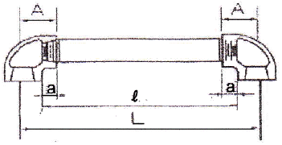
- L = ℓ + 2(A - a)
- L = A + 2(ℓ - a)
- L = a + 2(ℓ - A)
- L = ℓ - 2(A + a)
(정답률: 74%)
26. 호칭 지름 20A 인 강관을 2개의 45° 엘보를 사용해 그림과 같이 연결하고자 한다. 밑변과 높이가 똑같이 250mm라고 하면 빗변 연결부 관의 실제 소요되는 최소길이는 얼마인가? (단, 최소 물림 나사부의 길이는 13mm 로 한다.)(오류 신고가 접수된 문제입니다. 반드시 정답과 해설을 확인하시기 바랍니다.)
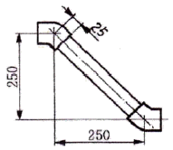
- 약 324mm
- 약 357mm
- 약 300mm
- 약 378mm
(정답률: 37%)
27. 이종관 이음에 대한 설명으로 맞는 것은?
- 재질이 다른 금속관의 이음은 부식에 주의한다.
- 강관과 주철관 이음은 나사이음을 많이 사용한다.
- 전해 작용으로 인한 부식은 거의 없다.
- 신축은 흡수되므로 고려할 필요가 없고 강도와 중량 등은 고려한다.
(정답률: 59%)
28. 동관용 공구 중 직관에서 분기관 성형 시 사용하는 공구는?
- 익스팬더
- 튜브커터
- 티뽑기
- 튜브벤더
(정답률: 74%)
29. 스테인리스강관 몰코 이음 시 사용하는 공구로 맞는 것은?
- 전용 입착공구
- 포밍 머신
- 익스팬더
- 탄젠트 벤더
(정답률: 72%)
30. 다음 중 용해 아세틸렌 취급 시 주의사항으로 틀린 것은?
- 용해 아세틸렌을 사용 후에는 잔압이 남지 않도록 하여야 한다.
- 용기에 충격이나 타격을 주지 않도록 한다.
- 아세틸렌 용기는 반드시 똑바로 세워서 사용해야한다.
- 아세틸렌 용기는 화기에 가깝거나 온도가 높은 장소에 두지 말아야 한다.
(정답률: 72%)
31. 관을 절단 후 관 단면의 안쪽에 생기는 거스러미를 제거하는 공구는?
- 플레어링 공구
- 정형기
- 파이프 리머
- 절단 토치
(정답률: 83%)
32. 동관에서 플레어 이음은 일반적으로 관지름 몇 mm 이하의 관을 이음 할 때 사용하는가?
- 20mm
- 32mm
- 40mm
- 50mm
(정답률: 68%)
33. 석면 시멘트관의 이음에서 2개의 고무링, 2개의 플랜지, 1개의 슬리브를 사용하여 이음하는 것은?
- 기볼트 이음
- 주철제 플랜지 이음
- 주철제 칼러 이음
- 심플렉스 이음
(정답률: 53%)
34. 오스터형 114R(104)번 나사 절삭기로서 절삭할 수 있는 강관의 최대 호칭 지름은 얼마인가?
- 50A
- 65A
- 80A
- 100A
(정답률: 51%)
35. 염화 비닐관의 고무링 이음법에 대한 설명 중 틀린 것은?
- 가열하거나 접착제를 사용해야 하므로 경비가 많이 든다.
- 시공이 간단하고 숙련도가 낮아도 시공이 가능 하다.
- 시공 속도가 빠르고 수압에 견디는 강도가 크다.
- 신축 및 휨에 대하여 완전 하며, 외부의 기후조건이 좋지 않아도 이음이 가능하다.
(정답률: 70%)
36. 테르밋 용접에서 테르밋은 무엇과 무엇의 혼합물인가?
- 규사와 납의 분말
- 붕사와 붕산의 분말
- Al분말과 Mg의 분말
- Al분말과 산화철의 분말
(정답률: 63%)
37. 주철관의 기계식 이음(mechanical joint)의 특징에 관한 다음 설명 중 틀린 것은?
- 수중작업이 가능하다.
- 소켓 이음과 플랜지 이음의 장점을 택하였다.
- 접합 작업이 간단하여 스패너 하나로 시공할 수 있다.
- 굴곡이 조금 만 있어도 누수가 심하다.
(정답률: 68%)
38. 교류 아크용접기의 2차측 무부하 전압은 보통 얼마 정도로 유지하여야 하는가?
- 약 20 ~ 30 V
- 약 40 ~ 50 V
- 약 70 ~ 80 V
- 약 180 ~ 400 V
(정답률: 69%)
39. 건물 내의 배수 수평주관의 끝에 설치하여 공공하수관에서의 유독가스가 침입하는 것을 방지하는데 가장 적합한 트랩은?
- 열동식 트랩
- P 트랩
- S 트랩
- U 트랩
(정답률: 67%)
40. 밸브 측면에서의 마찰이 적고 열팽창의 영향을 적게 받는 밸브로 고온, 고압에 가장 적합한 밸브는?
- 더블 디스크(double disk)밸브
- 파라렐 슬라이드(parallel slide)밸브
- 웨이지 게이트(wedge gate)밸브
- 니들(needle)밸브
(정답률: 48%)
3과목: 배관제도
41. 수도용 원심력 덕타일 주철관의 특징을 설명한 것으로 틀린 것은?
- 구상흑연 주철관이라고도 하며, 회주철관보다 수명이 길다.
- 정수두에 따라 고압관, 보통압관, 저압관으로 나눈다.
- 변형에 대한 가용성 및 기공성이 낮다.
- 재질이 균일하며 강도와 인성이 크다.
(정답률: 55%)
42. 배관 재료 중에서 보통 흄관이라고 부르는 관은?
- 에터니트관
- 석면 시멘트관
- 프리스트레스드관
- 원심력 철근 콘크리트관
(정답률: 74%)
43. 염화 비닐관에 관한 설명으로 가장 적합한 것은?
- PVC 파이프로 불리며 경질과 연질 2종류가 있다.
- - 60℃에서도 취화하지 않으므로 한냉지에 알맞다.
- 그라프 링과 0 링으로 특수 접합한다.
- 엑셀 온돌 파이프라고도 하며 유연성이 아주 좋다.
(정답률: 59%)
44. 동관에 대한 설명으로 맞는 것은?
- 두께별 분류로 K 타입이 가장 두껍다.
- 굽힘, 변형성이 나빠 작업성이 좋지 않다.
- 내식성은 좋지만 관 내면에 스케일이 잘 생긴다.
- 열전도율이 낮아 복사난방용 코일재료로는 곤란하다.
(정답률: 76%)
45. 다음 중 유기질 보온재가 아닌 것은?
- 펠트
- 규조토
- 코르크
- 기포성 수지
(정답률: 56%)
46. 비철 금속관에 대한 설명 중 올바른 것은?
- 연관은 내산성 및 내알칼리성이 좋다.
- 동관은 굽힘 및 절단 등의 가공이 어렵다.
- 알루미늄관은 순도가 높을수록 가공성이 좋다.
- 주석관은 가격은 저렴하나 묽은 산에 침식된다.
(정답률: 62%)
47. 보통 비스페놀과 에피크롤히드린을 결합해서 얻어지며 내열성, 내수성이 크고 전기 절연성도 우수하며, 도료 접착제용 및 방식용으로 널리 사용되는 것은?
- 광명단
- 알루미늄
- 아스팔트
- 에폭시 수지
(정답률: 69%)
48. 다음은 강관 플랜지의 시트(seat)종류이다. 이중 위험성이 있는 유체의 배관 또는 매우 기밀을 요구할 때 사용되는 것은 어느 것인가?
- 전면 시트
- 대평면 시트
- 소평면 시트
- 홈꼴형 시트
(정답률: 62%)
49. 다음 배관 부속 중 배관설비에서 사용 중 분해 수리 및 교체가 필요한 곳에 사용하는 것은?
- 플러그
- 유니언
- 부싱
- 니플
(정답률: 77%)
50. 일명 펙레스(packless) 신축이음쇠라고도 하며 설치공간을 많이 차지하지 않으나, 고압배관에 부적당한 신축이음쇠는?
- 스릴브형 신축이음쇠
- 벨로즈형 신축이음쇠
- 스위블형 신축이음쇠
- 루프형 신축이음쇠
(정답률: 54%)
51. 그림과 같은 제3각법 정투상도에서 미완성된 평면도를 바르게 투상한 두면은?
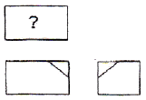
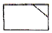
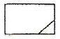
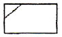
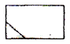
(정답률: 73%)
52. 다음 그림은 어떤 용접 기호인가?
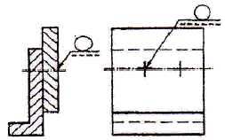
- 필릿 용접
- 플러그 용접
- 스폿 용접
- 심 용접
(정답률: 61%)
53. 다음 그림은 누진 치수 기입 방법이다. 기준점에서 A 화살표(↓)부분까지의 길이 치수는 얼마?
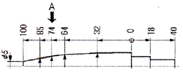
- 26
- 74
- 114
- 136
(정답률: 75%)
54. 단면도의 표시에 관한 설명으로 틀린 것은?
- 가려져서 보이지 않는 부분을 알기 쉽게 나타내기 위하여 단면도로 도시할 수 있다.
- 단면도의 도형은 절단면을 사용하여 대상물을 절단 하였다고 가정하고 절단면의 앞부분을 제거하고 그린다.
- 2개 이상의 절단면을 조합하여 하나의 단면도로 나타낼 수도 있다.
- 얇은 단면의 경우 실제 단면 두께와 같은 선 굵기의 실선으로 표시한다.
(정답률: 54%)
55. 그림과 같은 입체도의 제3각 정투상도로 가장 적합한 것은?
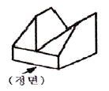
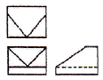
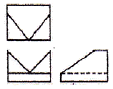
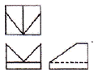
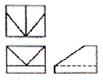
(정답률: 72%)
56. 다음 중 콕을 나타내는 기호는?
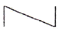
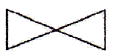
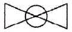
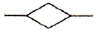
(정답률: 49%)
57. 도면의 척도 값 중 실제 형상을 축소하여 그리는 것은?
- 100 : 1
- √2:1
- 1 : 1
- 1 : 2
(정답률: 69%)
58. 길이 치수 허용차를 도면에 기입할 때 올바르게 나타낸 것은?
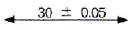
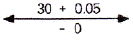
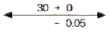
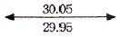
(정답률: 71%)
59. 나사 호칭 표시 “M2O x 2"에서 숫자 ”2“ 의 뜻은?
- 나사의 등급
- 나사의 줄 수
- 나사의 지름
- 나사의 피치
(정답률: 70%)
60. 다음 도면에 관한 설명으로 틀린 것은? (단, 도면에 ㄱ 형강 길이는 160mm 이다.)
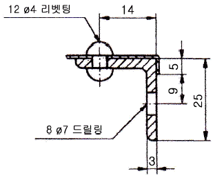
- ø 4 리벳의 개수는 1개이다.
- ø 7 구멍의 개수는 8개이다.
- 등변 ㄱ 형강의 호칭은 L 25 × 25 × 3 - 160 이다.
- 리벳팅의 위치는 14mm 인 위치이다.
(정답률: 63%)